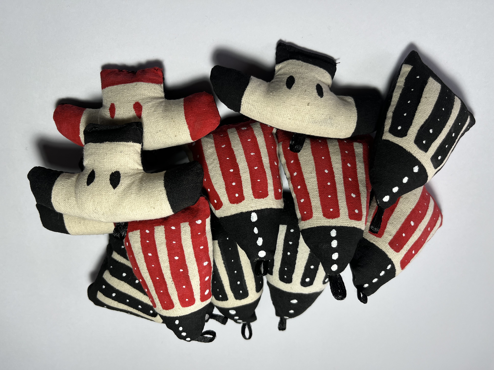
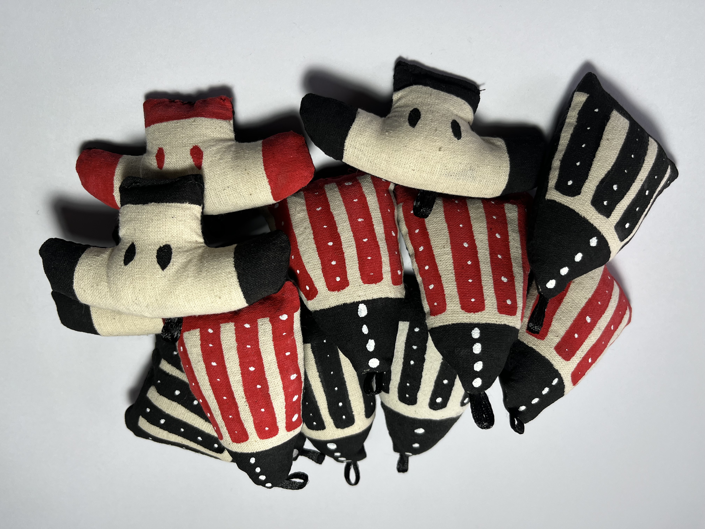

PATAGONIA SELKNAM
TIENDA DE SOUVENIRS
Artesanías y souvenirs
Patagonia Selknam es una iniciativa oriunda de El Salto, Puerto Aysén, que se basa en la creación de productos artesanales de alto diseño, hechos a mano, basados en la cultura y cosmovisión Selknam y que tiene como primer objetivo proveer a las tiendas de artesanías y souvenirs de productos artesanales locales, innovadores, llamativos y de uso práctico (como bolsas de telas, muñecos, jockeys, cojines, poleras, estuches para laptops), haciendo fusión del handmade y el diseño.
De este modo, las mercancías producidas buscan fomentar el conocimiento y difusión de la antes mencionada etnia
ancestral en los diferentes consumidores/turistas, tanto nacionales como internacionales, que visitan
la región. La idea es que los productos sean utilizados en la cotidianidad de los consumidores y eso ayude a
fomentar la identidad de nuestra región y potencial lugar de turismo. Asimismo, las mercancías creadas buscan
innovar y apoyar a la renovación de la artesanía regional generando una identidad local. La distribución y
venta de los productos se llevará a cabo en las diversas tiendas y ferias artesanales de nuestra región,
desde Puerto Cisnes a Chile Chico.
 
